|
Malmgårdsvägen
Gatunamnens historia
Ur Kulturhus på Söder och Djurgården, Arne Eriksson, 1999
|
Gatans äldsta kända namn synes ha varit Vintertullsgatan (1674). Den ledde ner till Vintertullen vid Hammarby sjö.
Stadsträdgårdsgatan var 1733 det gemensamma namnet för nuvarande Malmgårdsvägen och Nytorgsgatan. Stadsträdgården
låg söder om Nytorget.
Vid namnrevisionen 1885 har gatan fått namnet Vermdögatan. Detta namn kom senare att betraktas som missvisande
varför det 1939 ersattes med Malmgårdsvägen. Det var malmgården vid nr 53 som gav gatan namnet.
Den breda vägen ner mot Hammarby sjö var förr en del av den gamla vinterförbindelsen med Värmdön. Vid slutet av vägen
låg ett tullhus, Vintertullen, och därifrån gick den med ruskor utmärkta vägen över isen. Hammarby sjö var grund och frös
tidigt. Under fem av årets månader var detta skärgårdsbornas väg från mörkret och stormen in till
Götgatan och Hornsgatans
många varma och livliga krogar. Också i husen efter Malmgårdsvägen fanns det gott om krogar och bondkvarter.
På vintervägen från Värmdö färdades på sin tid Carl Gustaf Tessin från sin gård Boo. Och där kom också skalden och
tullinspektören Elias Sehlstedt från Sandhamn i släde. Sehlstedt skaldar:
|
|
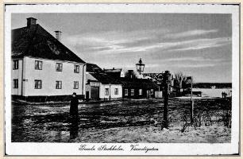
Värmdögatan i riktning mot Hammarby sjö. Värmdögatan 63,
Barnängs Tvärgata 2 (Ljusterögatan) t v. Senast 1920
Och Brunte han slök sin portion av hö
och jag tömmarna grep
och han nystade på över Hammarby sjö
genom tull'n, så det pep
och på gator ocb torg uti glädjen han sprang
och vid bjällrornas klang
trumpetade ut att jagkommit till stan
så jag skämdes som fan.
|
Man kan hålla med Per Anders Fogelström att Sehlstedt inte alls låter skamsen, snarare verkar han lika glad som hästen att
för ett tag ha sluppit ensamheten i Sandhamn. Fogelström berättar också att så sent som på 1870-talet gick vargar över
isen och knep spinneriets bandhund.
De flesta av husen efter Malmgårdsvägen förvärvades av
staden under 1880-och 1890-talet. De rustades upp och moderniserades till större delen under 1960-talet.
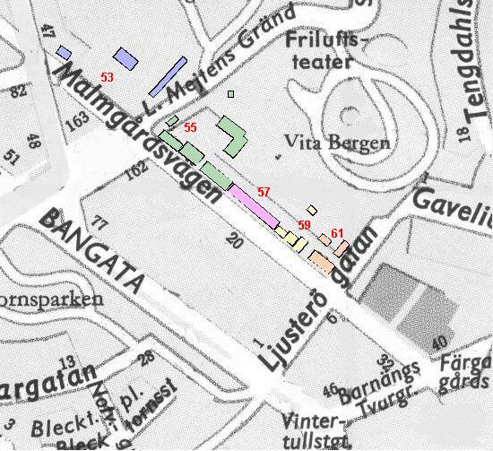
Malmgårdsvägen 53, Werner Groens malmgård
|
Huvudbyggnaden
och åtminstone en del av bostadslängan vid Lilla Mejtens gränd uppfördes mellan 1664 och 1688 av handelsmannen Scipio
Mejtens. Det är han som givit gränden sitt namn.
Trädgårdsmästarbostaden intill Malmgårdsvägen är troligen från 1700-talets början. Huset panelades och fick nytt brutet tak
1791. Trädgårdspaviljongen tillkom på 1920-talet. Den markremsa som går från trädgårdsmästarbostaden till grannens
brandmur är allt som återstår av kungliga trädgårdsmästaren Christian Horlemans 1600-talsträdgård. Trädgården sträckte sig
längs Malmgårdsvägen t. o. m. nr 51 och också långt upp i Vita Bergen. En återstod av Mejtens trädgård är den åldriga lindallé
som finns bakom huvudbyggnaden.
|
|
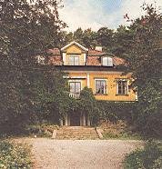
1997
|
|
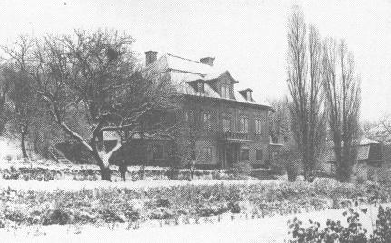
1904
|
|
Christian Horleman var en av kung Karl Xl inkallad trädgårdsmästare från Holland. Han var farfar till den berömde
slottsarkitekten Carl Hårleman. Horleman planterade närmare 300 fruktträd i sin stora trädgård. Han byggde växthus och
orangerier och odlade den tidens exotiska växter som vindruvor, pomeranser, citroner och meloner.
 Nutid 2002 Nutid 2002
Gårdsanläggningen kallas idag Werner Groens malmgård efter en vinhandlare som ägde den i början av 1700-talet.
År 1745 övertog en av Groens arvingar, handelsmannen Joachim Schultz, fastigheten. Schultz brandförsäkrade malmgården
1750.
|
Av brandförsäkringshandlingarna framgår att han hade både drivhus, orangeri, stall och vagnshus samt en stor
fruktträdgård. Schultz änka sålde 1790 fastigheten till grosshandlaren Diedrich Engström, som i sin tur 1798 sålde till en
fabrikör Gladberg.
Under 1800-talet hade fastigheten ett flertal ägare. Här återfinns bl.a. kammarskrivaren Claes Jacob Lindblad, hovurmakaren
Wallströms två döttrar, balettmästare Anders Selinder, skomakaren Johan Ekrot, fabrikören Mathias Lundin och slutligen
handlanden August Wilhelm Fundin.
1883 förvärvar staden fastigheten.
Elsa Borgs tid i malmgården
|
Den sociala verksamhet Elsa Borg blev ledare för och som fick sin begynnelse 1876 i ett bibelkvinnohus vid Skånegatan 104
växte och fordrade ökade utrymmen. År 1879 fick man möjlighet att disponera huvudbyggnaden vid Stadsträdgårdsgatan 53
(nuvarande Malmgårdsvägen) och inrättade här ett skyddshem för unga kvinnor.
Elsa Borg var glad. »Intet hus i hufvudstaden syntes oss mer passande för detta ändamål«, skriver hon.
Vatten måste under de första åren hämtas i Hammarby sjö och forslas hem på kälke eller kärra. År 1882 kunde man glädja
sig åt att ha fått vattenledning.
I ett annat hus inom fastigheten, trädgårdsmästarbostaden, skapades ett litet barnhem. I grannhuset Malmgårdsvägen 55
ordnades ett sjukhem.
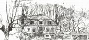 
|
|
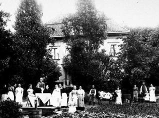
Elsa Borgs räddningsanstalt i Werner Groens malmgård
|
När Elsa Borg avled 1909, övertog Louise Ulff ansvaret för de många hemmen. En del fanns alltjämt i de gamla husen vid
Vita Bergen, några var utflyttade på landet. En ny tid håller emellertid på att bryta in, en tid med förbättrade förhållanden och
större krav. Fattigdomen och nöden har minskat betydligt, levnadsstandarden höjts. Skyddshemmet i huvudbyggnaden läggs
ner 1918. I stället flyttar ett av barnhemmen in i huset. Men 1928 måste även detta avvecklas. Huset var förfallet och
Barnavårdsnämnden kunde inte längre godkänna det för barnhemsverksamhet.
Det var med svidande hjärta Louise Ulff måste ge upp den sista av Elsa Borgs skapelser. Hon skriver:
|
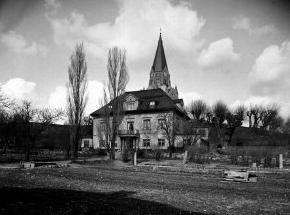
1906
|
|
Vi har nödgats säga upp vårt hyreskontrakt med Stockholms stad för det hus med dithörande trädgård, där vårt först
bildade barnhem sedan 1918 haft sitt hem. Huset var förfallet och ansågs af Barnavårdsnämndens inspektion olämpligt till
barnhem. Att lämna denna plats, där vi haft dessa båda kära hem tillsammans nära 50 år och där tre af våra barnhem i ett
mindre hus inom samma tomt haft sin vagga, det tar djupt - det svider! Där ha uppsänts böner och bönesvar kommit,
där ha lofsånger tonat, där har varit åkallan under tider af kamp och nöd, där ha vi fått vara vittnen till hur själar lösts ur
bojor, där ha vi otaligt många
gånger med våra vänner fått samlas omkring Guds ord och prisat honom för hans trofasthet och nåd mot sin lilla
skara.
|
Elsa Borgs trädgårdsmästare Nutid 2002
År 1892 kom trädgårdsmästare August Johansson till Elsa Borg för att sköta den stora trädgården. Han hade god
utbildning och skördarna blev större till hennes stora glädje. Alltsammans kunde säljas nere på torgen i staden och
pengarna var välkomna. Där såldes också äpplen från de Kalvillträd som Horleman planterat. August Johansson
förvarade dem i Werner Groens gamla vinkällare i den långa röda längan.
År 1923 tog August Johanssons son Josef över trädgården. Han hade vid sin sida hustrun Augusta och svägerskan
Emma. På senare år arrenderade Josef trädgården av Stockholms stad. Josef Johansson bodde på gården under
sammanlagt 83 år.
|
Varken Josef eller hans hustu hade glömt Elsa Borg. År 1933 planterade de en magnolia till Elsa Borgs ära.
Sedan 1968 ordnar Sofia Hembygdsförening en vårfest på platsen, den s.k. Magnoliafesten, när blommen slår ut på det
vackra magnoliaträdet. År 1972 kunde föreningen avtäcka en skulptur av Elsa Borg, gjord av Astri Bergman-Taube. Den
bekostades i huvudsak av en donation från Josef och Augusta Johansson men också genom en insamling inom
Hembygdsföreningen. Skulpturen står intill magnoliaträdet.
Elsa Borg - Vita Bergens drottning - har med rätta kallats vår första verkliga socialarbetare.
|
|
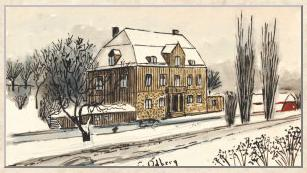
G. Ödberg, akvarell
|
Malmgårdens fortsatta öden
Sedan Elsa Borgs verksamhet upphört 1928 stod malmgården utan hyresgäst i nästan tio år och förföll alltmer. Men i
slutet av 1930-talet beslöt staden att restaurera huvudbyggnaden och huset fick därefter nya hyresgäster.
|
Huvudbyggnaden
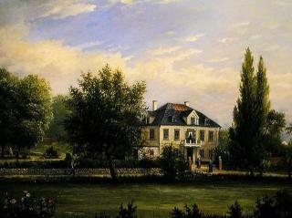
Ehrenfried Wahlqvist, olja, 1887
|
|
År 1939 flyttade familjen Knut och Elsa Ewerlöf in. Han finansborgarråd, senare statsråd och riksdagsledamot, hon riksdagskamrat
med sin man och Fredrika Bremerförbundets ordförande. Eva von Zweigbergk besökte familjen Ewerlöf i början av 1950-talet. I sin bok Stockholmspromenader skildrar hon
besöket:
Vi går uppför trädgårdsgången mot det grågröna trähuset som ligger ståtligt vid foten av Sofia kyrka med terrasser som
klättrar uppför berget med svarta förvridet knotiga askar som fond.
Vi kommer in i en välvd stenhall och fortsätter trappan upp till andra våningens sällskapsrum. De är varken stora eller
många - ett hörnrum med gustaviansk stuckdekor, ett pyttelitet kabinett och så ett hörnrum igen, matsalen som knappt
rymmer mer än 12 vid bordet. Tre små vindskupor har slagits ihop till ett arbetsrum längs ena gaveln och så finns där
fyra sovrum och ett litet kök.
|
År 1983 ställdes från Stockholms stad en fråga till Rudolf Steiner-seminariet i Järna om det fanns intresse att rusta upp och
stå för den framtida driften av denna kanske Sveriges äldsta handelsträdgård. Samma år bildades stiftelsen Malmgården
Vita Bergen vars ändamål är att bedriva läkepedagogisk och socialterapeutisk verksamhet på antroposofisk grund.
Stiftelsen odlar biodynamiskt. Under odlingssäsongen finns möjlighet att besöka handelsträdgården, snittblomsfältet,
örtagården och trädgårdskaféet. Under adventstiden anordnas julmarknad i huvudbyggnaden.
Trädgårdsmästarbostaden
|
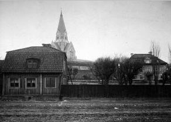
Elsa Borgs barnhem i trädgårdsmästarbostaden. 1906
|
Nutid 2002
|
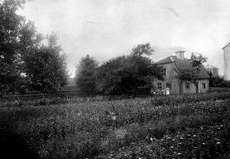
Elsa Borgs barnhem i trädgårdsmästarbostaden. 1897
|
Huset utnyttjades från 1891 som barnhem i Elsa Borgs sociala verksamhet. Huset innehåller tre rum och kök.
Barnhemmet hade sin del av trädgården och varje barn hade sitt eget lilla land. Elva barn kunde man ta emot. De äldre
barnen fick samtidigt med vanlig skolundervisning lära sig husliga sysslor och se till de mindre barnen. Flickorna skulle bli
praktiska, dugliga kvinnor.
Om barnen som lekte i trädgården kunde Elsa Borg nöjt konstatera: »Barnen se friska och glada ut, hvilket är ett stort
ämne till tack och lof, särskildt för dem, som veta deras föregående historia.«
År 1907 upphörde barnhemsverksamheten i huset.
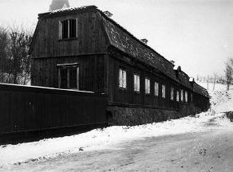
Byggnaden mot Lilla Mejtens gränd
Nutid 2002
|
|
Bostadslängan vid Lilla Mejtens gränd
Huset uppfördes mellan 1664 och 1688 av handelsmannen Scipio Mijtens. Byggnaden innehöll 1750 fem rum, förstugor,
stall, vagnshus och hönshus. År 1795 fick längan ny takställning med brutet tak som skulle ge utrymme för
tobakstorkning.
År 1814 fanns här en förstuga med två kontor, några rum med kakelugn, ett mangelrum, en bagarstuga med spis, bakugn
och inmurad järnpanna, en torkkammare med kakelugn, stall för en häst och fähus för tre kor.
År 1848 innehöll byggnaden två fabriksrum för sidenväveri som värmdes av flyttbara varmugnar av järn, ett rum med
kammarspis, en förstuga med tegelstensgolv, ett rum med kakelugn, en vedbod och ett stall för två hästar.
År 1864 fanns i huset tre förstugor, tre rum, två kök med järnspisar, ett mangelrum, en tvättstuga med murad spis och
cementbassäng, en vedbod, åtskilliga kontor, i norr två bodar.
År 1938 blev byggnaden ombyggd och restaurerad. Den
innehåller idag två förstugor och en lägenhet om 66 kvm.
|
Malmgårdsvägen 55, Vintertullen
|
Fastigheten Vintertullen 21 består idag av fem hus. Det är Huvudbyggnaden, Längan, Fabrikshuset, Gårdshuset och Lusthuset.
Husen och trädgården bildar en välbevarad och unik fabriksmiljö, som tillhör de tidigaste i sitt slag.
År 1731 ägdes fastigheten av Catharina Bröms som var änka efter en destillator Starck. På gården bodde vid den tiden
brännvinsbrännaren Petter Sundberg med hustru, gossen Nils Pehrsson och pigan Britta Johansdotter samt trädgårdsmästaren Johan Siggström med hustru. Titlarna skvallrar om att det fanns ett brännvinsdestilleri på fastigheten.
Fastigheten förvärvades av staden 1882. Två hus vid gatan byggdes om 1965, gårdshuset 1968.
Huvudbyggnaden
Huvudbyggnaden i två våningar och hög vind är uppförd 1749 av bryggaren Adam Brandt. På fasaden mot gården är årtalet
smitt i ankarslutarna. Långsidan mot gatan visar sju fönsteraxlar i två våningar.
|
|
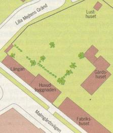
|
|
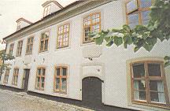
|
|
Nedre fönsterraderna har ännu kvar fästena till
tidigare fönsterluckor. Takgesimsen är rikt profilerad och åt norr reser sig en framträdande volutsvängd skärmgavel. Huvudbyggnaden är till stora delar välbevarad och innehåller ursprungliga inredningsdetaljer.
Den »naggade« fasaden är mönsterputsad för att i kontrast till slätputsade fasader erhålla arkitektoniska variationer.
Metoden att med spikbräda eller käppar nagga putsade fasader började komma i bruk under 1700-talet.
|
Adam Brandt bebodde gården tillsammans med hustrun och fyra barn. År 1755 hade han sju drängar, tre kökspigor en
minderårig piga och en jungfru, vilka arbetade och bodde på gården. År 1769 köptes gården av hans styvson bryggaren Johan
Petter Wire. Denne gick i konkurs 1779. Gården ropades då in
på stadsauktion av Wires svåger, bryggaren Anders Söderström. Söderström sålde fastigheten 1784 till bröderna Nicander,
fabrikören Carl Hindrich och sergeanten Hans Reinhold. Med de nya ägarna är bryggeriepoken över. Carl Nicander startade en
textilfabrik.
Nutid 2002
|
|
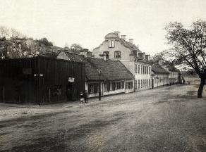
Värmdögatan söderut år 1923. Närmast t v nr 55. De närmaste
stenhusen skulle ha rivits för att lämna plats åt Ringvägen, vilket dock aldrig förverkligades.
|
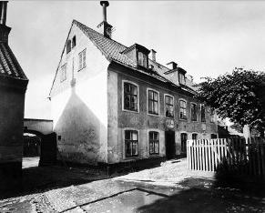
Malmgårdsgatan 55 från sydost på gårdssidan
|
|
En kort tid innehades fastigheten av fabrikören Carl Gustaf Apiarie, ägare till bl.a. Barnängens manufakturverk.
Apiarie sålde 1793 till slaktare Carl Wilhelm Djurberg, som förmodligen bedrev ett slakteri på gården.
År 1811 kom fabrikören Christopher Kihl till fastigheten. Han återupptog textiltillverkningen. Redan efter två år har han 14
anställda. Han tillverkade medelfint och grovt kläde.
Elsa Borg öppnade ett sjukhem i huvudbyggnaden. Den stora salen användes för sjukgymnastik och andakter. Sjukhemmet
flyttades snart till andra lokaler men Elsa Borg behöll lägenheten och öppnade i november 1885 ett Missionshem. Här utbildades kvinnor inför resor till slumområden i landet och till andra världsdelar. Den stora salen fick då fungera som skolsal.
|
Längan
Den korta envåningslängan mellan huvudbyggnaden och Lilla Mejtens gränd byggdes som uthus i flera etapper mellan 1750
och 1815.
Längan innehöll vid 1700-talets slut ett vagnshus, några stall, ett rum som användes som krog, ytterligare ett vagnshus
och ett fähus.
År 1828 omnämns att längans mellersta del är under uppförande som fabriksrum.
|
|
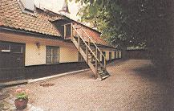
1997.
År 1856 innehöll längan ett enda
stort fabriksrum med tre varmugnar av järn. Före 1879 delades fabriksrummet upp i bostadsrum och kök.
|
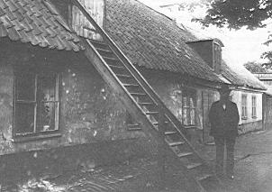
Längan från gården 1910.
|
Fabrikshuset
Fabrikshuset uppfördes 1842 av fastighetens dåvarande ägare, brädhandlaren Törner Bergman. Fabrikshuset hade två
fabrikssalar med vardera en varmugn. Huset är senare ombyggt till bostadslägenheter.
|
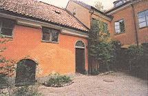
|
|
Gårdshuset
Gårdshuset, som uppfördes under 1700-talets förra del, byggdes 1859 på med en våning. 1864 innehöll husets södra flygel
två stora verkstadsrum, två kallrum och ett pressrum. I dag rymmer huset bostäder.
|
Lusthuset
Trädgården har bevarats med terrassmurar och staket. I den östra delen placerades 1931 ett lusthus, som flyttades hit från
Färgargården. Den vindflöjel som tidigare fanns på huset bar årtalet 1782 - förmodligen lusthusets byggnadsår.
Fastighetens öden under 1800-talets senare del
Före 1850 lades större delen av textiltillverkningen ned och delar av egendomen hyrdes ut till stadsnämnden som fattighärbärge. År
1850 bodde här 30 personer varav flera var ensamstående med barn.
År 1856 såldes fastigheten till en tapetfabrikör. Under flera ägare bedrevs här såväl textiltillverkning som tapettillverkning.
År
1871 uppgick antalet hyresgäster till 80 personer.
År 1880 hade antalet boende ökat till 305 personer fördelade på 57 hushåll. De flesta av hushållen bestod av gifta och ogifta par
med två, tre barn och ett par inneboende. Men här fanns också ensamstående personer, som hade upp till fem inneboende.
Sammanlagt fanns nu 55 rum och 18 kök i fastighetens olika byggnader. I genomsnitt bodde sex personer per rum och 18 personer
per kök. Varje avträde fick betjäna 37 personer.
År 1882 övertog Stockholms stad fastigheten. Byggnaderna har sedan dess i stort sett fungerat som bostadshus.
Några tidsbilder från Malmgårdsvägen 55
I samfundet S:t Eriks årsbok 1910 finns en målande beskrivning av Mila Hallman om Fagge d.y. , ägare till Faggens krog vid
Gaveliusgatan. Sanningshalten i berättelsen kan dock ifrågasättas, då Fagge d. y. dog redan 1738.
[...] bli icke alls förvånad över att fa se en figur i knäbyxor och jacka med osäkra steg linka framåt Stadsträdgårdsgatan (Malmgårdsvägen). Mannen heter Peter Fagge. Han kommer sannolikt från stenhuset i den stora trädgården i hörnet av Lilla Mejtens
gränd och Stadsträdgårdsgatan. - Fagge är en urbota drinkare och då han inte har en slant att köpa starkvaror för, skaffar
han sig sitt dagliga rus genom att sätta sina fattiga klädtrasor i pant, särskilt hos den förmögne bryggaren Wijre, just han som rår om
huset i hörnet av Stadsträdgårdsgatan och Mejtens gränd. Wijres öl var godt och starkt, bryggaren var en människovänlig man som
gärna unnande en fattig nästa ett glas och om det inte fanns slantar att betala med, tog han rocken i utbyte. Och inne i Wijres trevna
sal fick den arme Fagge för en stund glömma sitt eget torftiga hem; till Wijres gick han hvarenda dag för att slippa bli påmint om hur
han slarfvat bort sitt lif, hur han vanskött sin trädgård, som var afsedd att gifva föda åt honom och hans lilla familj, för att slippa se
hur barnet svalt och hur eländigt det såg ut hemma hos honom. Sedan kom lutolekaren Bellman och diktade om honom till en
romantisk figur, som kunde ställa till glada upptåg, med dryckjom, musik och kägelspel.
En annan skildring om förhållandena på Malmgårdsvägen 55 finner vi också i S:t Eriks årsbok 1943. I en artikel av Alf Kjellin om
Ridderstads Stockholmsmysterier (en social roman från Oskar I:s tid) står följande:
|
Även Ridderstads skildring av den rätt skandalösa fattigvården i Stockholm torde i stort sett vara riktig. Man kan t.ex. taga fasta på
hans skildring både i anteckningarna och i romanen av baracken på söder (Stadsträdgårdsgatan 55). Vad som här påtalas var ett
eländigt natthärbärge för tiggare av bägge könen. Ridderstad beskriver med nykterhet och just därför så verkningsfull saklighet huru
de släpptes i väg om morgnarna för att återkomma om kvällarna med sina hoptiggda bylten. De voro då ofta berusade. Ibland togos de
under sina strövtåg av polisen, varefter de höllos fängslade en tid för att därpå börja det gamla livet igen, en »evig
tiggeri-cirkulation«. Många åskådliga detaljer- de båda sovsalarna med sina eländiga britsar, vattensån vid dörren, »kontoret« med
den humbugsartade kontrollen - kunna nu knappast verifieras. Men både samtida källor och senare skildringar bekräfta
helhetsintrycket.
|
|
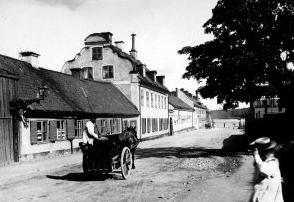
Värmdögatan söderut år 1920.
|
Denna barack liksom fattigvården överhuvudtaget i Stockholm var ofta föremål för klagomål i den »röda« pressen,
särskilt i Söndagsbladet, som påtalade både den primitiva inredningen och de oordnade förhållandena. I en artikel (10/11 1850)
berättas det sålunda i tidningens vanliga konkreta stil, att hela hopar av »uslingar« varje afton släpade sig till baracken och på vägen
ställde till obehag för mötande personer. Ofta inhystes 300 personer om natten.
Elsa Borg, »Vita Bergens drottning«, skriver i slutet av 1880-talet:
55 Trädgårdsgatan hade av ålder varit illa kändt, såsom ett av hufvudstadens värsta nästen. Och barnen därifrån utgjorde
söndagsskolelärarnas största förskräckelse.
Malmgårdsvägen 57
Huset byggdes som textilfabrik med bostäder etappvis från 1700-talets mitt till 1787. Huset inreddes till bostäder för mindre bemedlade
1858. Redan 1928 beslöt staden med stark tillskyndan från skönhetsrådet att köpa in huset för att bevara den helgjutna miljön från
exploatering och för att låta huset ingå i ett blivande kulturreservat.
Malmgårdsvägen 59
De två trähusen vid gatan är troligen byggda före 1730. Stugan på gården fanns 1816. Stenhuset vid gatan är byggt ca 1810.
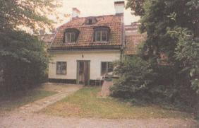
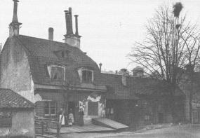
Malmgårdsvägen 59 från gården 1997.
Gårdsinteriör från Värmdögatan (Malmgårdsvägen) 57 och 59 år 1907.
|
|
Malmgårdsvägen 61
De båda husen, den stora träbyggnaden med brutet tegeltak och karaktäristiska vindskupor och det mindre envåniga, uppfördes
under 1700-talets förra hälft och förvärvades av staden 1890.
|
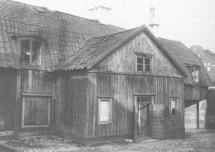
Värmdögatan (Malmgårdsvägen) 61 från gården 1907.
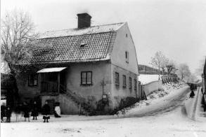
Värmdögatan (Malmgårdsvägen) 61 vid hörnet av
Tullgårdsgatan
(Ljusterögatan), år 1900. Västerifrån.
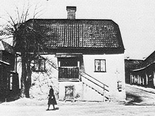
Gamla tullhuset Värmdögatan (Malmgårdsvägen) 61 vid hörnet av
Tullgårdsgatan
(Ljusterögatan).
|
|
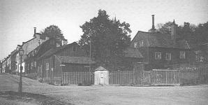
Värmdögatan (Malmgårdsvägen) 61 vid hörnet av Tullgårdsgatan (Ljusterögatan), år 1920.
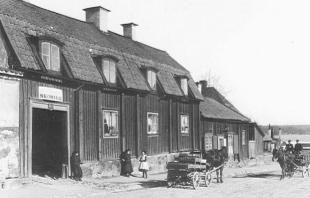
Värmdögatan (Malmgårdsvägen) 61 år 1907. Norrifrån.
|
Nutid 2002
|
|
Värmdögatan (Malmgårdsvägen) 63
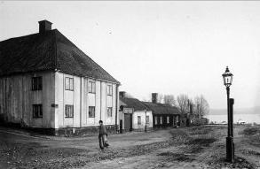
Hörnhuset Värmdögatan 63/Tullgårdsgränd 2. År 1890
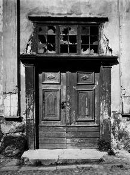
Värmdögatan 63. Portal
|
|
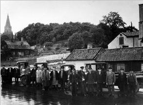
Zackrissons åkeri framför Malmgårdsvägen 63, där båda
hörnhusen vid Tullgårdsgränd, nr 63 och 61 är rivna. År 1930
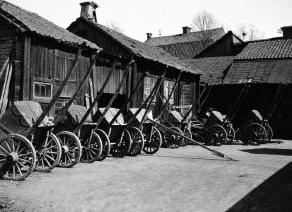
Värmdögatan 63. Gårdsinteriör 1920
|
|
|